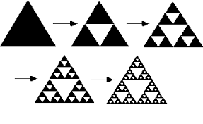

Le triangle de Sierpinski
Le programme permet de tracer le triangle de Sierpinski

Les difficultes rencontrees:
- La difficulte principale que j'ai rencontre est la syntaxe.
- Aussi, j'ai pris du temps pour comprendre la creation et l'utilisation des "files".
- J'ai aussi pris un peu de temps pour comprendre le role de chaque ligne du programme.
Mr Bouillot dans l'ennocee, nous a preciser que:
- le caractere "+" signifie tourner de l'angle donne vers la gauche
- le caractere "-" signifie tourner de l'angle donne vers la droite
- les caracteres "F" et "G" veulent dire qu'il faut avancer de la longueur donnee